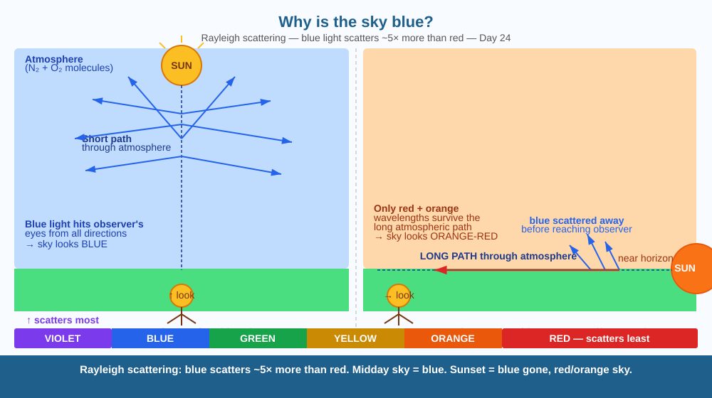

Discover why the sky is blue during the day and red-orange at sunrise and sunset — using only the same physics that explains why prisms split white light into rainbows.
Sunlight looks white (or slightly yellowish). But the sky above you is blue. And the same Sun, at sunset, turns the sky orange and red. Same Sun. Same atmosphere. What changed — and why does the colour depend on the time of day?
Sunlight contains all colours of the visible spectrum: red, orange, yellow, green, blue, and violet — each with a different wavelength. When light hits the tiny gas molecules (mainly N₂ and O₂) in the atmosphere, it scatters. The key discovery, made by Lord Rayleigh in 1871, is that:
Shorter wavelengths scatter much more than longer wavelengths. Specifically, scattering intensity is proportional to 1/λ⁴ (one over the fourth power of wavelength). Blue light has a wavelength about 1.5× shorter than red light — so it scatters roughly (1.5)⁴ = 5 times more.
During the day: The Sun is high overhead. Light travels through a relatively short path of atmosphere. Blue light scatters in all directions across the sky — so when you look anywhere in the sky (not directly at the Sun), blue scattered light reaches your eyes from every direction. The sky looks blue.
At sunrise/sunset: The Sun is near the horizon. Sunlight must travel through a much longer column of atmosphere to reach your eyes. By the time it arrives, almost all the blue light has been scattered away sideways. Only the long-wavelength red and orange light remains — the sky and the Sun itself appear orange-red.
Why not violet (even shorter wavelength)? Violet light scatters even more than blue, but (1) sunlight contains less violet to begin with, and (2) your eyes are much less sensitive to violet than to blue. So the sky appears blue rather than violet.
Imagine rolling different-sized balls through a field full of people. Small balls (blue photons) bounce off people constantly — they scatter in every direction. Large balls (red photons) barrel straight through, bouncing off fewer people. When you look up at the "people field" (sky), you see small balls (blue light) coming at you from all directions. When you look at the narrow path the Sun takes at sunrise, you see only the large balls that made it straight through without being deflected — red and orange.

The diagram shows the Earth with the atmosphere as a blue shell. Two Sun positions are shown: overhead (midday) and at the horizon (sunset). From the overhead position, a short atmospheric path is drawn — blue arrows scatter in all directions. From the horizon position, a long path is drawn — blue arrows are scattered away long before reaching the observer; only red arrows continue forward to the observer's eyes. An inset bar shows the visible spectrum with shorter-wavelength colours (violet/blue) labelled "scatter most."
Fill a glass with water. Add a few drops of milk and stir. Shine a torch from the side — the water looks slightly blue (blue light from the torch scattered sideways toward you). Now look at the torch through the milky water — it looks slightly orange-red (blue scattered away; red light passed straight through). You have just reproduced sunrise and sunset in a glass.
The Moon has no atmosphere. From the Moon's surface, the sky is always pitch black — even when the Sun is shining. You can see stars at "noon" on the Moon. This is because there are no gas molecules to scatter sunlight sideways. What does this tell you about why we can only see stars at night on Earth? Is it that stars disappear during the day — or that scattered blue light overwhelms their faint glow?
What is the main reason the sky appears blue during the day?
Why is understanding Rayleigh scattering more useful than just knowing the sky looks blue?
Why does the sky look red or orange during sunrise and sunset rather than blue?
On a clear day, the sky directly overhead appears a deeper, richer blue than the sky near the horizon. Explain this difference using the Rayleigh scattering model — consider how much atmosphere the light must pass through to reach your eye from directly above vs from just above the horizon. Then explain why the sky near the horizon sometimes appears slightly whitish rather than blue.
Earth's early atmosphere, before photosynthetic life evolved, contained mostly CO₂ and methane. The Sun was also younger and slightly dimmer. Scientists have calculated that the ancient Earth's sky may have been orange — similar to the atmosphere of Titan (Saturn's moon), which has an orange methane haze. The blue sky we see is literally a product of billions of years of biology — oxygen produced by cyanobacteria and plants transformed the atmosphere and changed the colour of the sky.
Rayleigh scattering: short wavelengths (blue) scatter ~5× more than long (red). Blue scatters across the whole sky → sky looks blue. At sunset, thick atmosphere scatters blue away → only red/orange reach your eyes.